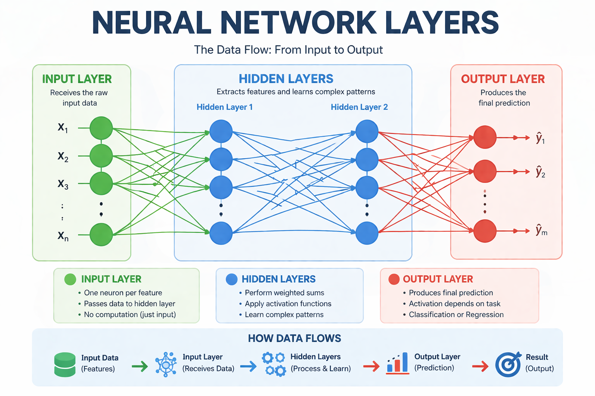

Neural Network Portfolio
A comprehensive review of neural network components, architecture, and their applications in modern machine learning.
1. Introduction to Neural Networks
Neural networks are a cornerstone of modern machine learning and artificial intelligence. Inspired by biological neural networks in the human brain, neural networks consist of interconnected nodes, or neurons, that process information in layers. These networks are particularly effective for tasks such as classification, regression, image recognition, and natural language processing (NLP).
In this portfolio, we will explore the key components of neural networks, understand how data flows through them, and examine the role each component plays in the network's performance. The visual representation provided will help illustrate these concepts, and each section will delve into the theoretical and practical significance of these components.
2. Neural Network Components
- Layers: Neural networks are organized into layers that transform input data through a series of computational steps. There are typically three types of layers:
- Input Layer: This is the first layer where data is fed into the network. Each neuron in the input layer represents a feature of the dataset.
- Hidden Layers: These intermediate layers perform the complex transformations and feature extractions from the input data. A deeper network with more hidden layers can model more complex patterns but may require more computational resources and time.
- Output Layer: The final layer produces the predicted results. In a classification problem, this layer will output class probabilities, while in a regression problem, it outputs a continuous value.
- Neurons: Neurons are the fundamental units in a neural network that process information. Each neuron performs the following tasks:
- Input: Each neuron receives inputs, which are the outputs of neurons from the previous layer.
- Weighted Sum: The neuron computes a weighted sum of the inputs. The weights represent the importance of each input feature.
- Activation: The weighted sum is passed through an activation function to determine the output of the neuron, introducing non-linearity into the model.
- Weights: Weights are the parameters of a neural network that scale the input data before passing it to the next layer. They determine the strength of the connection between neurons. During training, these weights are adjusted to minimize the error of the network’s predictions.
- The initial weights are typically set randomly, and the network learns the optimal weights through a process called backpropagation.
- The update rule used in optimization algorithms, like gradient descent, adjusts the weights based on the computed gradients of the loss function with respect to the weights.
- Activation Functions: These functions define how the weighted sum of inputs is transformed into the output of a neuron. Without activation functions, a neural network would be a linear model, limiting its ability to model complex patterns.
- Sigmoid: Outputs values between 0 and 1. Commonly used for binary classification.
- ReLU (Rectified Linear Unit): Outputs the input directly if positive, otherwise, it returns zero. ReLU is widely used due to its simplicity and effectiveness in deep networks.
- Softmax: Typically used in multi-class classification, it converts raw output into probability values for each class.
- Loss Functions: The loss function measures how well the neural network's predictions match the actual outcomes. It provides a metric for the optimization algorithm to minimize during training.
- Mean Squared Error (MSE): A common loss function used for regression tasks, which measures the average squared difference between predicted and actual values.
- Cross-Entropy Loss: Used for classification problems, this loss function compares the predicted probabilities with the actual class labels.
- Optimization Algorithms: These algorithms adjust the weights in the neural network to minimize the loss function. The most common optimization algorithm is Gradient Descent.
- Gradient Descent: This algorithm computes the gradient (the slope of the loss function) and updates the weights in the opposite direction to reduce the error.
- Adam: An advanced version of gradient descent that combines the advantages of both AdaGrad and RMSProp, providing faster convergence and better generalization in many cases.
3. Neural Network Architecture
The diagram below represents a simple feed-forward neural network architecture. Data flows from the input layer, through one or more hidden layers, and finally to the output layer. Each arrow represents the weights connecting the neurons.

Note: Upload the neural network diagram to GitHub or host it externally and replace the image link here.
4. Component Explanations
Let’s break down the process that occurs at each layer of the network:
- Input Layer: The data fed into the network in the form of numerical values representing features of the dataset. This data is passed to the next layer where computations occur.
- Hidden Layers: These layers perform key transformations and feature extraction from the raw input. The number of hidden layers and the number of neurons in each layer directly affect the network's learning capacity.
- Output Layer: The final layer produces the network’s predictions. For a binary classification task, the output will be a value between 0 and 1 representing the probability of each class.
The interplay of these layers, weights, activation functions, and optimization algorithms allows the neural network to learn from data and improve its predictions over time.
5. Summary
Understanding the components of a neural network and how they interact is crucial for developing deep learning models. By visualizing the architecture and learning how data flows through the network, we gain insights into how machine learning models make predictions and optimize performance. This exercise has solidified my understanding of neural networks, and I look forward to exploring more advanced topics in machine learning, including deep learning and reinforcement learning.
Through this exercise, I have gained valuable insights into the trade-offs between model complexity, performance, and training time. I now have a better understanding of how adjustments in layers, neurons, and activation functions can impact the neural network’s ability to generalize and solve real-world problems.